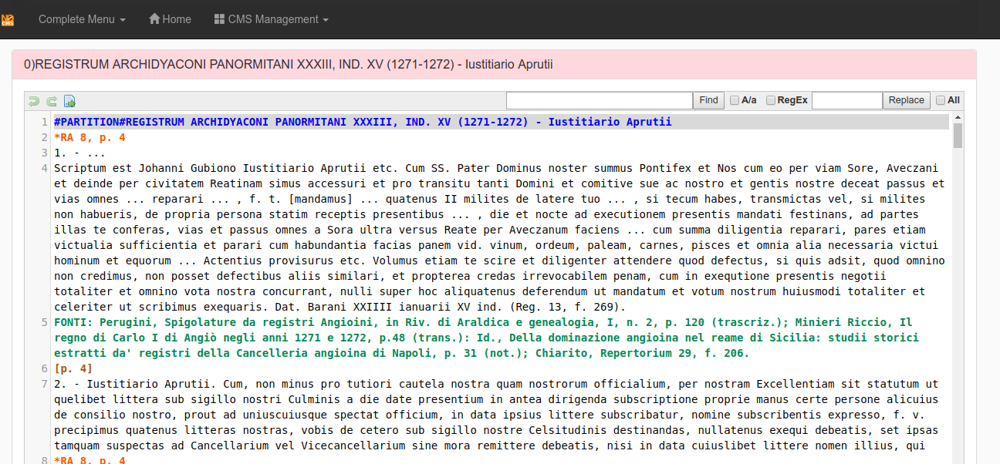
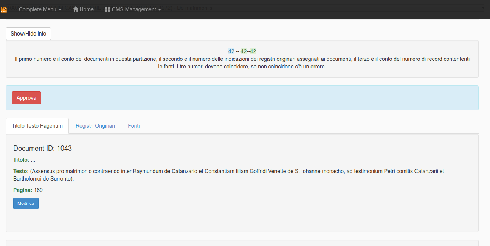
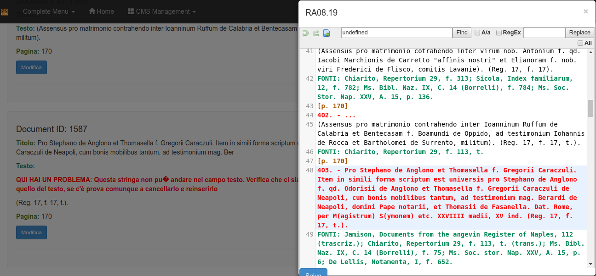
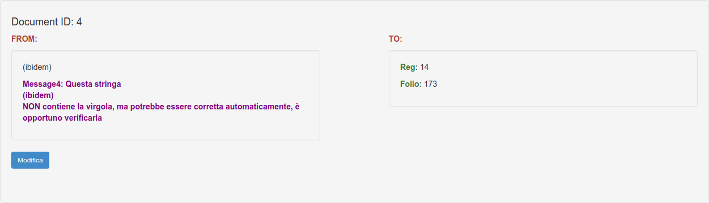
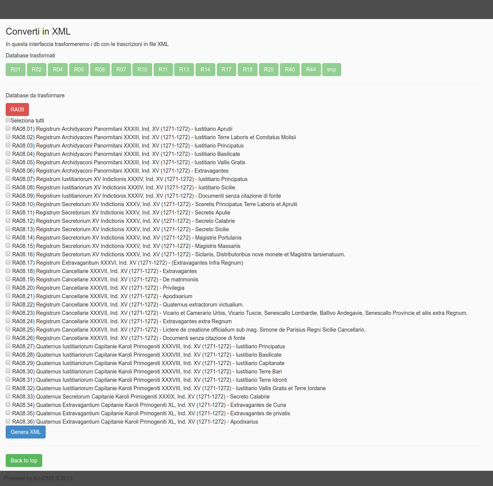

Southern Italian Angevine Chancery Papers in XML, the script: MaRa v2.0
Alfredo Cosco
alfredo[dot]cosco[at]gmail[dot]com
https://github.com/orazionelson

MaRa stands for: Marcatore dei Registri Angioini
GitHub repository: https://github.com/angioXML/MaRa2
This software is part of a project of University of Napoli "Federico II", that aims to build an XML archive, a database and a search tool for the Southern Italian Angevine Chancery Papers.
A short historical intro
During the World War II, at the end of September 1943, a German army troop retreating from southern Italy burned the Angevine chancery Archive of Naples Kingdom. The papers were hosted, for safety reasons, in a village, San Paolo Belsito, about 30km far from their building in Naples (then almost daily bombed by the Allies). The German retaliation destroyed thousands of folders containing parchments from the 13th to the 15th century.
After the war, the archivists of Archivio di Stato di Napoli, led by Riccardo Filangieri, went in search of the transcripts of the lost acts, administrative and political, which had been made over the centuries by archivists, scholars and historians. Then, they started to rebuild the archive in printed volumes. The reconstruction work continues today, it reached the number of 50 volumes and it covers a range of years from 1265 to 1434, under the main title: I Registri della Cancelleria Angioina.
Software Dev for Angevine Chancery Papers in XML
Since 2004, Prof. Roberto Delle Donne, from University of Napoli "Federico II", managed for a digital edition of the Angevine Chancery sources, with the aim to realize a research tool accessible through a web interface.
I was involved, as a student of Arts and Literature and worker in IT, at the early stages of the project.
Focusing on available options XML appeared as the most suitable format to store the data, then a DTD was defined by Dott. Manuela Schiano. According to the DTD each XML had to be structured in three parts:
- document metadata
- document content
- editing data
The content was structured in: PROTOCOLLO, TESTO and ESCATOCOLLO, that are the three main portions of a medieval document. Inside the document content each part contains children defined with the names of diplomatic: INSCRIPTIO, DATATIO, SANCTIO...
As early transcripts where made by random documents, a series of difficulties arose:
- slowness to mark-up the documents,
- different tools used by editors,
- non-separation of concerns.
Moreover, the frustration of editing by hands full sets documents repeating tags hundreds of times, or the time spent to debug them when transcribed by other editors, brought to a different approach:
let's start from raw .txt files and automate mark-up as much as possible.
Then, this target became the object of my degree thesis in Medieval History: Alfredo Cosco, Critica documentaria e nuove tecnologie. Problemi, tecniche e un caso di studio, Università degli Studi di Napoli "Federico II", aa 2007-2008.
MaRa v1 was a set of unordered PHP scripts with a minimal web interface. it was born to transform text transcripts (made in a standard format easier than XML) in well-formed XML.
MaRa v2 is its evolution and was used to realize a first heavy draft of our XML repository.
All the scripts were rewritten or nested in CodeIgniter, a good option to add features with little effort, extended by an HMVC CMF called No-CMS, really useful and comfortable to build a user interface around the already written functions.
All the functions now are in models/ and controllers/ of mara2/ module.
The new interface integrates a highly customizable text editor like CodeMirror in order to manage everything inside the browser.
There is a dedicated set of regex written for CodeMirror to highlight the text files with different colors: useful to check transcript formal errors; it's possible to see them in the file:
registridev/modules/mara2/assets/scripts/angevin.js
The DTD has been replaced by an XSchema.
And, that's the most important thing, the job is designed in a flow:
from the transcript import to the export in a set of xml valid documents eventually packed in a zip file.
MaRa2 workflow
The starting point is the panel in:
registridev/mara2/mara2 controller, here you have a TOC based on printed editions designed to manage the flow.

You can create a registry and import the text file.
Then you can Manage the registry in 5 steps.

Few notes about the transcript standard
Each registry transcript is made by one .txt file, it contains different partitions, each partition contains from 1 to n documents.
Each partition is separated by the tag:
#PARTITION#
The first line after the tag is the partition title.
Then the documents.
Each document must have this structure:
xxxxxxxxxx[id]. - [title][text][primary-sources]FONTI:[secondary-sources]
The pagination follows the printed text, like this example:
xxxxxxxxxx#PARTITION#[partition title][page number][document][document][document][page number][document][document][document]...
So, an end transcript should look like this:
xxxxxxxxxx#PARTITION#REGISTRUM IUSTITIARIORUM, LI, IND. II (1273) - Iustitiario Aprutii citra flumen Piscarie*RA 11, p. 31. - Pro mictenda pecunia ad Cameram.Karolus etc, Phi1ippo de Mondellis Vice Iustitiario Aprutii etc. Cum Nos propter diutinam moram quam in Tuscie partibus traximus magnas subierirnus expensas, et adhuc Nos subire oporteat quousque erimus extra Regnum...Dat. ap. Montemflasconem per Iohannem ven. Panormitanum Archiepiscopum, Regni Sicilie Vice Cancellarium, a. D. MCCLXXIII, die IIII septembris II ind., R. n. a. IX (Reg. 14, f. 172).FONTI: Arch. di St. di Napoli, facsim. n. 148; Terlizzi, Documenti delle relazioni tra Carlo I d' Angiò e la Toscana, p. 342, n. 660 (trascriz.); Mirieri Riccio, ms. in Arch., I, f. 347, t (not.); Chiarito, Repertorium 29, f, 219.2. -(Guillelmum de Grollaio statuit super custodia passuum Aprutii). (Reg. 14, f. 172, t.).FONTI: Chiarito, Repertorium 29, f, 219; Durrieu, II, p. 328.......#PARTITION#REGISTRUM IUSTITIARIORUM, LI, IND. II (1273) - Iustitiario Aprutii ultra flumen Piscarie*RA 11, p. 717. -Die Iovis V mensis octubris II ind. ap. Alifiam, de mandato dom. Regis, Iustitiariatus Aprutii divisus est in duas partes, vid. a flumine Piscarie ultra factus est Iustitiarius Egidius de Sancto Liceto miles, cuius commissio inferius denotatur, et citra flumen Piscarie factus est Iustitiarius Petrus de Tyonvilla miles, prout in talibus commissionibus designatur (Reg. 14, f. 179).FONTI: Faraglia, Saggio di corografia abruzzese, in Arch. stor. Nap., XVI, p. 735; Giustiniani, Dizionario geografico ragionato del Regno di Napoli, I, p. 119; Camera, Annali, p. 321; Delfico, Dell'Interamnia Pretuzia, p. 31....
The STEPS
Step1a
This STEP splits the entire registry into partitions using the tag #PARTITION#.

The highlighted text in the integrated editor helps to find possible transcript errors.

Step1b
Same as before but it adds page numbers to each document

Step2a
This is the core of the application, it inherits most of MaRa1 functions. The software splits the partitions in single documents and import them in 4 db tables:
ra_mara_RXX_index: and index of all registry partitions with their status:
- true (for the currrent editing partitions),
- false (for the partition to edit),
- approved (for the released partitions);
ra_mara_RXX_document: for the document data: Title, Text, Pagenumber;
ra_mara_RXX_regorig: for the document primary sources;
ra_mara_RXX_source: for the document secondary sources.
(where XX is the registry id number)
At the top of the page there is an Info Panel that works as a first error control:
if the 3 numbers in the panel are the same everything is going well otherwise there's something wrong in the transcript
Each document is analyzed in the tabs at the middle the page.

The software normalizes the most common errors appeared in editing using regular expressions. Sometimes it corrects them, in other cases it shows an error message.
Sample error: in the next image the document title has not been separated by the text.

It is possible to correct the error in the integrated editor.

Sample error: in the next image the software alerts for a leak of the page number.

Sample correction: in the next image the software advises for an autocorrection.

Sample Corrections: in the next image the software advises you and correct the notation ibidem taking the info from the previous record.

The tab for the secondary sources, called Fonti, will split and normalize them.
See in the next image that the notation Ms. Bibl. Naz changes to Biblioteca Nazionale di Napoli, ms.
 It is possible to edit the transformation DB from the sub-tab Casistica di trasformazione
It is possible to edit the transformation DB from the sub-tab Casistica di trasformazione

Sometimes the split vision of the sources shows you that something is wrong, see the next image:

Once there are no more errors it is possible to click on the button Approva to release the partition.
This will lock the partition and will unlock the next one.
When all partitions are released, on the page appears the Crea XML that leads you to the next step.

Step3a
This step transforms the records into XML files.

Step3b
The last step is dedicated to validating the XML. It is possible to validate the entire transcription or the single document.

Then at the bottom of this interface is possible to pack each generated registry in a zip file or create a TOC of them.

The workflow is strictly connected with the filesystem organization inside the directory:
- mara_folders/
the sub-directories:
- 00_originali/ Contains the original transcripts
- 01_trascrizioni/ Contains the transcript at step1
- 02_tocpic/ Contains the images with the TOC of each transcript
- 03_xml/ Contains the generated XML documents
- 04_zip/ Contains the zipped folders with documents
- 05_rollback_files/ Transcript txt files regenerated from the DB during the flow if needed by the editors for further corrections
- 06_toc/ Contains a useful toc of generated documents
- maradb/ Contains a text-db used for the sources normalization process
At the end of the flow, XML files will be stored in 03_xml/.
Targets
Almost the half of the entire documents set edited in I Registri della Cancelleria Angioina has been transformed to XML using MaRa v1 and v2.
Moreover, the design of the project, bring more consciousness about how to:
design an editing infrastructure based on XML but dedicated to people that have to practice XML as less as possible.
The know-how and the files were transferred in the new project based on xquery and eXist-db.
Notes about the software installation for testing
MaRa2 is designed for a localhost use, moreover, its specifical features make its use for a different project a nonsense, anyway, its installation and use comes as common CMS in a LAMP environment:
- unzip the package to your apache web-server, so your path will be: http://localhost/registridev
- import the registridev.sql.gz file in a MySql table called: registridev
- set the CodeIgniter config files, as any CI application, with your server and MySql data
- set the registridev/ directory (and everything inside it) permissions to 777
- log-in on registridev/main/login as admin/admin
- test the application, go to registridev/mara2/mara2
The package in this repository contains a sample registry (R11) ready for the STEP2A, you can try to find and correct some errors then transform it in XML files.
References
I registri della Cancelleria Angioina, Napoli, since 1950
Riccardo Filangieri, L'Archivio di Stato di Napoli Durante la Seconda Guerra Mondiale, Napoli, 1946
Jenkinson, Hilary, Sir & Bell, H. E. (Henry Esmond) & British Committee on the Preservation and Restitution of Works of Art, Archives, and other Material in Enemy Hands (1947). Italian archives during the war and at its close. H.M.S.O, London
Commission Internationale de Diplomatique. Comité International des Sciences Historiques, Vocabulaire International de la Diplomatique, ed. M. M. CÀRCEL ORTÌ, València 1994 e1997 (2a ediz. corr.).
LAMP: https://en.wikipedia.org/wiki/LAMP
PHP: http://www.php.com
CodeIgniter: http://www.codeigniter.com
jQuery: https://jquery.com/
No-CMS: https://github.com/goFrendiAsgard/No-CMS
CodeMirror: https://codemirror.net/
xquery: https://www.w3.org/XML/Query/
eXist-db: http://exist-db.org